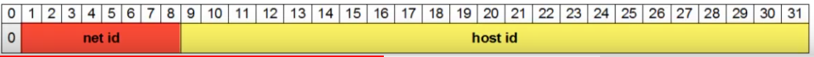
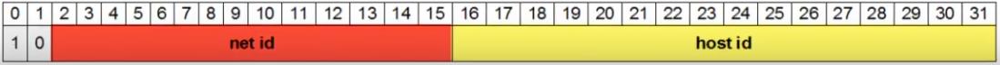
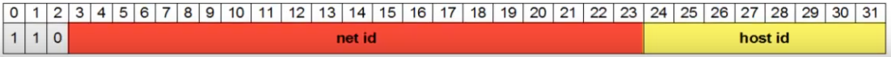

Adressage IP : Classes
Plan
• Introduction
• Concept
• Classes
• Classe A
• Classe B
• Classe C
• Classe D et E
Introduction
• au départ, seul le premier octet servait à désigner le réseau
◇ les 3 autres octets désignant les machines
◇ soit seulement 256 réseaux 16 million d'adresses !
• nécesité de permettre plus de réseaux
◇ première proposition : IEN 46 - juin 1978
▪ agréation des réseaux en regions
◇ RFC 790 - Septembre 1981
▪ solution présentée dans ce cours
▪ obsolète depuis Septembre 1993 !
- et l'appartion du CIDR (Classless Inter-Domain Routing)
- RFC 1518
Concept
• Séparation des adresses en deux parties
◇ net id : adresse réseau
◇ host id : adresse l'hôte
• 5 classes d'adresses
◇ identifiées par une lettre de A à E
◇ différentes tailles de réseaux
• les adresses réseaux sont gérées au niveau mondiale (pour Internet)
◇ par l'IANA
◇ par d'autres organisation (Apple, MIT, etc ...)
◇ ou par des registres internet régionaux
◇ cf https://www.iana.org/assignement/ipv4-address-space/ipv4-address-space.xml
Classes
Classe Début Fin Net id sur :
A 0.0.0.0 127.255.255.255 le premier octet
B 128.0.0.0 191.255.255.255 les deux premiers octets
C 192.0.0.0 223.255.255.255 les trois premiers octets
D 224.0.0.0 239.255.255.255 NA (multicast)
E 240.0.0.0 255.255.255.255 NA (réservée)
Classe A
• Réseaux de très grande dimension
◇ nombreuse adresses réservées à des organisations
▪ ex : 018.rrr.rrr.rrr pour le MIT
◇ car particulier : boucle locale (réseau 127.0.0.0)
• nombre de réseaux possible 128
• nombre de postes maximum par réseau : plus de 16 millions
• premier octet : de 0 à 127
• masque par défaut : 255.0.0.0 - /8

Classe B
• Réseaux de “moyenne” dimension
• nombre de réseaux possibles : 16 384
• nombre de postes maximum par réseau : 65534
• premier octet : 128 à 191
• masque par défaut : 255.255.0.0 - /16

Classe C
• Réseaux de petite dimension
• nombre de réseaux possible : 2 097 152
• nombre de postes maximum par réseau : 254
• premier octet : 192 à 223
• masque par défaut : 255.255.255.0 - /24

Classe D et E
• adresse uniques (pad de net id)
• Classe D
◇ destinées au mutlicast
◇ bits de départ : 1110
◇ premier octet : 244 à 239
• Classe E
◇ réservées par l'IANA pour un usage futur
◇ bits de départ : 1111
◇ premier octet : 240 à 255
Et l'ipv6
• IPv6 a été présenté en 1998
◇ soit bien après le CIDR (1993) et l'abandon du concept de classe
• Il n'y a donc aucun concept de classe
◇ IPv6 étant pleinement orienté CIDR
Ce qu'on a couvert
• Présentation de l'adressage ip sur réseaux classfull
◇ obsolescence
◇ concepts
◇ introduction au concept d'adresse réseau